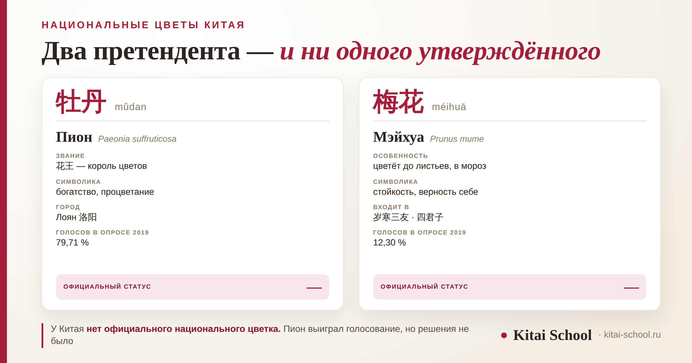
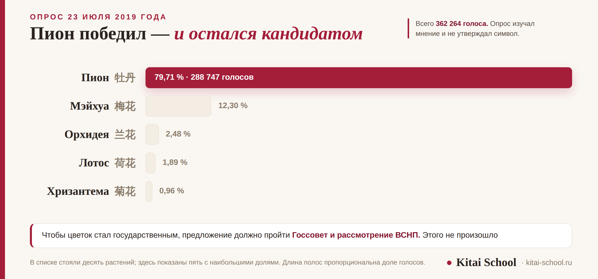

Культура Китая
Национальные цветы Китая: пион, слива мэйхуа и спор о главном символе


Вопрос кажется простым: национальные цветы Китая — что там, пион? И да, и нет. Пион действительно выиграл народное голосование с результатом, который трудно оспорить, — почти восемьдесят процентов. Но национальным цветком он от этого не стал, потому что голосование и решение — разные вещи. Разберём двух главных претендентов, их символику и то, почему спор тянется больше века и до сих пор не закрыт.
Официального национального цветка у Китая нет — страна входит в число немногих, где он не утверждён. Главный претендент — пион 牡丹, символ богатства, «король цветов». Второй — мэйхуа 梅花, цветущая слива, символ стойкости. В опросе 2019 года пион набрал 79,71 %, но опрос изучает мнение, а не утверждает символ. Единственный утверждённый статус у мэйхуа — на Тайване, с 1964 года.
Какой цветок символ Китая: короткий ответ
Если нужен один ответ — пион. Так скажет и китаец, и путеводитель, и поисковик. Пион стоит на вазах, на свадебных открытках, в живописи гохуа и в названии городского фестиваля, который каждую весну собирает миллионы человек.
Если нужен точный ответ — официального национального цветка у Китая нет. Не «пока не выбрали из двух», а именно нет: в законе он не закреплён. Китай тут в небольшой компании стран, у которых государственный цветок не утверждён вовсе.
Разница между «символ» и «официальный символ» здесь принципиальная. С национальным животным вышло иначе: панда закреплена и в охранном статусе, и в дипломатической практике — мы разбирали это отдельно, в статье про национальное животное Китая. С цветком такого нет.
Пион 牡丹: король цветов
За пионом в китайской культуре закреплены два звания. Первое — 花王 (huāwáng), «король цветов». Второе длиннее и красивее: 国色天香 (guósè tiānxiāng) — «краса страны и небесный аромат».
Выражение пришло из стихотворной строки танского чиновника Ли Чжэнфэна: 国色朝酣酒，天香夜染衣 — «краса страны поутру пьянеет от вина, небесный аромат ночами пропитывает одежды». С тех пор 国色天香 стало устойчивым и вышло за пределы ботаники: так говорят и о женской красоте. Как устроены такие четырёхзначные обороты, разбираем в статье про идиомы 成语.
| Что | По-китайски | Смысл |
|---|---|---|
| Звание | 花王 huāwáng | король цветов, первый среди всех |
| Постоянный эпитет | 国色天香 guósè tiānxiāng | краса страны и небесный аромат |
| Что означает | — | богатство, процветание, благополучие |
| Город | 洛阳 Luòyáng | разведение с эпохи Суй, расцвет при Тан, при Сун — лучшее в стране |
Связь с богатством не случайна и не выдумана продавцами сувениров. Пион требователен, растёт медленно и раньше стоил дорого — позволить его себе мог не каждый. Со времён Тан и Сун он стал знаком благоденствия: считалось, что мода на пионы возвращается тогда, когда в стране спокойно и сытно. Про то, как в китайской культуре читаются другие визуальные знаки, — в разборе значение цвета в китайской культуре.
Мэйхуа 梅花: цветок, который цветёт в мороз
По-русски мэйхуа обычно называют сливой, и это верно лишь наполовину. 梅花 (méihuā) — это Prunus mume, растение из рода сливовых, но ценят его не за плоды. Ценят за срок цветения: мэйхуа раскрывается в холода, до появления листьев, когда остальной сад стоит голый.
Отсюда и всё остальное. Если пион означает достаток, то мэйхуа означает стойкость: способность не изменять себе, когда обстоятельства к этому не располагают.
Мэйхуа входит в два устойчивых набора китайской культуры, и оба стоит знать:
- 岁寒三友 (suìhán sānyǒu) — три друга зимней стужи: сосна, бамбук и мэйхуа. Сосна и бамбук остаются зелёными, мэйхуа цветёт в мороз;
- 四君子 (sì jūnzǐ) — четыре благородных: мэйхуа, орхидея, бамбук и хризантема. Классический набор сюжетов для живописи и каллиграфии.
Мэйхуа — ещё и примета конца зимы: её цветение начинается раньше календарной весны. О том, как китайский язык устроен вокруг этого времени года, — в статье про весну по-китайски.
Голосование 2019 года и что оно решило
Самая измеримая точка в этом споре — опрос Китайского общества цветоводов. Итоги объявили 23 июля 2019 года. Голосов набралось 362 264, в списке стояли десять растений.

Результат выглядит однозначным: 288 747 голосов за пион, 79,71 процента. Мэйхуа — 12,30, орхидея — 2,48, лотос — 1,89, хризантема — 0,96.
И всё-таки это не решение. Опрос изучает мнение, а чтобы цветок стал государственным символом, предложение должно пройти Госсовет и рассмотрение Всекитайского собрания народных представителей. Ни того, ни другого не случилось. Пион так и остался кандидатом с очень большой поддержкой.
Почему спор так и не закончился
Причина не в том, что голосов мало. Причина в том, что участники спорят не только о цветке, но и о том, сколько цветков вообще должно быть. Обсуждали три подхода.
| Подход | По-китайски | Суть |
|---|---|---|
| Один цветок | — | сторонники пиона против сторонников мэйхуа |
| Два цветка | 一国两花 | пион и мэйхуа вместе: богатство и стойкость |
| Четыре цветка | 一国四花 | по временам года: пион, лотос, хризантема, мэйхуа |
Вариант с двумя цветками — не свежая выдумка. Ещё в 2005 году на совещании Китайского общества садоводства большинство участников высказались именно за пару. А в июле 2019 года академик Ван Вэньцай, которому тогда было 93 года, написал от руки отдельное мнение: два цветка вместе передают смысл полнее, чем любой из них поодиночке.
Логика в этом есть. Пион говорит о благополучии, мэйхуа — о выдержке. Каждый по отдельности описывает страну наполовину.
Студентка готовила доклад о Китае для университета и прислала мне черновик. Первая строка раздела про символы звучала уверенно: национальный цветок Китая — пион.
Я предложила проверить формулировку у носителя, и мы задали вопрос преподавательнице из Сианя. Она ответила коротко: 还没定 — «ещё не решили». И добавила, что дома у неё пион, а мама всю жизнь считает главным цветком мэйхуа.
В докладе мы поменяли одно слово: вместо «национальный цветок» стало «главный претендент на роль национального цветка». Смысл не пострадал, а неточности не осталось. С тех пор я прошу студентов проверять именно такие фразы — те, что звучат как общеизвестный факт и потому не вызывают сомнений.
Остальные восемь: кто ещё был в списке
В голосовании стояли десять растений, и восемь из них набрали мало. Но малый процент здесь не значит «случайный цветок»: за каждым стоит свой пласт культуры, и в живописи они встречаются не реже пиона.
| Цветок | Иероглифы | С чем связан |
|---|---|---|
| Орхидея | 兰花 lánhuā | сдержанность и благородство: цветёт неярко, в стороне от чужих глаз. Один из «четырёх благородных» |
| Лотос | 荷花 héhuā | чистота вопреки окружению: растёт в иле, но остаётся незапятнанным. Образ закреплён сунским эссе о любви к лотосу |
| Хризантема | 菊花 júhuā | осень и уединение. Связана с поэтом Тао Юаньмином, который оставил службу ради сада |
| Османтус | 桂花 guìhuā | успех на экзаменах: «сорвать ветку османтуса» означало выдержать государственный экзамен |
| Китайская роза | 月季 yuèjì | постоянство: цветёт почти круглый год, отсюда и название — «помесячная» |
Обратите внимание на устройство набора «четыре благородных»: мэйхуа, орхидея, бамбук и хризантема. Это не список любимых растений, а четыре качества, которые традиция считала достойными: стойкость, сдержанность, прямота и способность обходиться малым. Цветок здесь работает как короткое имя для черты характера — примерно так же, как в русском «дуб» или «фиалка», только набор устоявшийся и всем известный.
Отсюда понятно и затруднение с выбором. Один цветок в такой системе не может отвечать за всё сразу: у каждого закреплено своё качество, и назначение главного означает, что остальные качества уходят на второй план. Спор идёт не о ботанике, а о том, что именно страна хочет сказать о себе одним знаком.
Мэйхуа на Тайване: единственный утверждённый статус
Есть деталь, без которой картина неполная. Мэйхуа официально утверждена национальным цветком Китайской Республики — решением Исполнительного юаня от 21 июля 1964 года. То есть у мэйхуа документально закреплённый статус есть, а у пиона нет нигде.
Символику там расписали подробно: пять лепестков соотносят с пятью ветвями власти, три тычинки — с тремя народными принципами Сунь Ятсена. Изображение мэйхуа используется в официальной символике и на олимпийском флаге команды. То есть у цветка там не только культурное значение, но и вполне юридическое: он закреплён решением органа власти и имеет прописанное толкование.
Любопытно и то, как разошлись подходы. На Тайване символику расписали до отдельной части цветка — каждый лепесток и каждая тычинка получили значение. В материковом Китае наоборот: цветок остаётся культурным образом, а не государственным знаком, и встречается в живописи, речи и городских праздниках, не будучи ничем закреплён.
Мы приводим это как справочный факт: он объясняет, почему у двух претендентов разное положение и почему разговор о национальном цветке в материковом Китае сложнее, чем кажется со стороны.
Как говорить о цветах по-китайски
В русском языке «цвет» и «цветок» в родительном падеже совпадают, и из-за этого запрос «значение цветов в Китае» приводит то к краскам, то к растениям. В китайском такой путаницы нет: это разные слова.
| По-русски | Иероглифы | Пиньинь |
|---|---|---|
| цветок | 花 | huā |
| цвет, окраска | 颜色 | yánsè |
| национальный цветок | 国花 | guóhuā |
| пион | 牡丹 | mǔdan |
| мэйхуа, цветущая слива | 梅花 | méihuā |
| орхидея | 兰花 | lánhuā |
| лотос | 荷花 | héhuā |
| хризантема | 菊花 | júhuā |
| цвести | 开花 | kāihuā |
Обратите внимание на четыре названия подряд: 兰花, 荷花, 菊花, 梅花 — во всех второй знак один и тот же, 花. Это обычный способ словообразования: определение плюс родовое слово. Считают цветы счётным словом 朵 (duǒ): 一朵花 — «один цветок», 三朵梅花 — «три цветка мэйхуа». Для веток и стеблей берут другое слово — 枝 (zhī).
Есть и обратная сторона: в разговоре 花 означает не только цветок. Тот же знак работает глаголом со значением «тратить»: 花钱 (huā qián) — тратить деньги, 花时间 (huā shíjiān) — тратить время. Это разные слова, совпавшие в написании, и путать их не стоит.
А у самого знака 花 сверху стоит ключ 艹 — «трава». Он же стоит в 茶 (чай) и 草 (трава): по нему часто удаётся угадать, что знак связан с растениями. Как это работает, разбираем в статье про значение ключей в иероглифах.
Хотите разбирать такие вещи не по пересказам, а на самом языке? На пробном занятии посмотрим ваш уровень и покажем, как читать культурные образы через иероглифы: подготовка к HSK. Оставить заявку или написать в Telegram.
Частые вопросы (FAQ)
Какой цветок — символ Китая?
Чаще всего называют пион (牡丹, mǔdan) — его зовут королём цветов и связывают с богатством и процветанием. Но у пиона нет официального статуса: Китай входит в число немногих стран, где национальный цветок законодательно не утверждён. Второй постоянный претендент — мэйхуа (梅花), цветущая слива, символ стойкости.
Пион — символ какой страны?
Обычно под этим вопросом имеют в виду Китай, и по сути ответ верный: пион прочно связан с китайской культурой, живописью и городом Лоян, где его разводят больше тысячи лет. Но формально пион не является утверждённым национальным цветком Китая — он остаётся кандидатом, за которого в 2019 году проголосовало почти 80 процентов участников опроса.
Есть ли у Китая официальный национальный цветок?
Нет. В 2019 году Китайское общество цветоводов провело опрос: из 362 264 голосов 288 747, то есть 79,71 процента, получил пион. Но опрос изучает мнение, а не утверждает символ: чтобы цветок стал государственным, предложение должно пройти Госсовет и рассмотрение Всекитайского собрания народных представителей. Этого не произошло.
Почему мэйхуа называют сливой?
Мэйхуа (梅花) — это Prunus mume, растение из рода сливовых, но не та слива, плоды которой продают в магазине. Ценят её не за плоды, а за цветение: она раскрывается в холода, до появления листьев, когда остальные растения ещё спят. Отсюда и её значение — стойкость.
Что такое «три друга зимней стужи»?
岁寒三友 — устойчивое выражение, которое объединяет сосну, бамбук и мэйхуа. Все трое переносят зиму: сосна и бамбук остаются зелёными, мэйхуа цветёт в мороз. В живописи и поэзии эта тройка означает верность себе в трудных обстоятельствах. Мэйхуа входит и в другой набор — 四君子, «четыре благородных»: мэйхуа, орхидея, бамбук и хризантема.
Какие ещё цветы предлагали сделать национальными?
В опросе 2019 года кроме пиона и мэйхуа были орхидея (2,48 процента), лотос (1,89) и хризантема (0,96), а всего в списке стояли десять растений. Обсуждали и составные решения: два цветка сразу — пион и мэйхуа, — или четыре по временам года: пион, лотос, хризантема и мэйхуа.
Дальше по теме: национальный символ, который всё-таки закреплён, — большая панда; символика красок — значение цвета в китайской культуре и жёлтый цвет в Китае; что в историях про иероглифы правда, а что придумано — курс по этимологии; и подборка проверенных фактов о языке — интересные факты о китайском языке.
Источники
- Сообщения китайских информационных агентств об итогах опроса Китайского общества цветоводов, объявленных 23 июля 2019 года: общее число голосов и доли по каждому растению.
- Материалы о культурной истории пиона и о разведении пионов в Лояне, включая происхождение выражения 国色天香.
- Сайт администрации президента Китайской Республики — раздел о национальных символах, где приводится решение от 21 июля 1964 года и трактовка пяти лепестков и трёх тычинок.
- Практика Kitai School — разбор культурных образов на занятиях.
- Оговорка: статус национального цветка в материковом Китае не закреплён, и всё, что касается «главного» символа, — это общественная дискуссия, а не норма. Данные опроса приводятся на дату объявления итогов.
Пусть язык расцветает вместе с вами! 花开富贵！